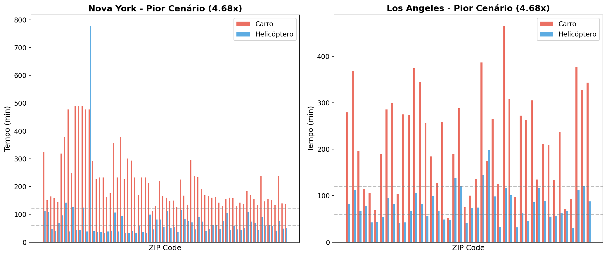
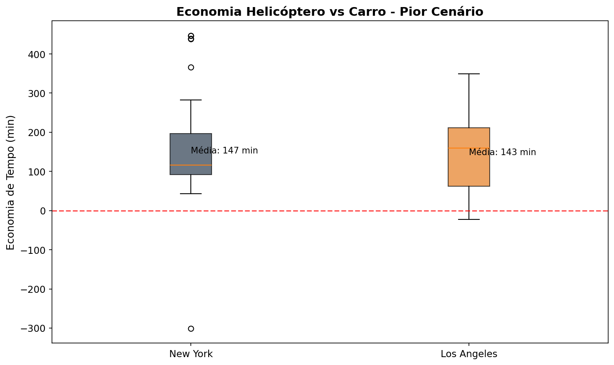
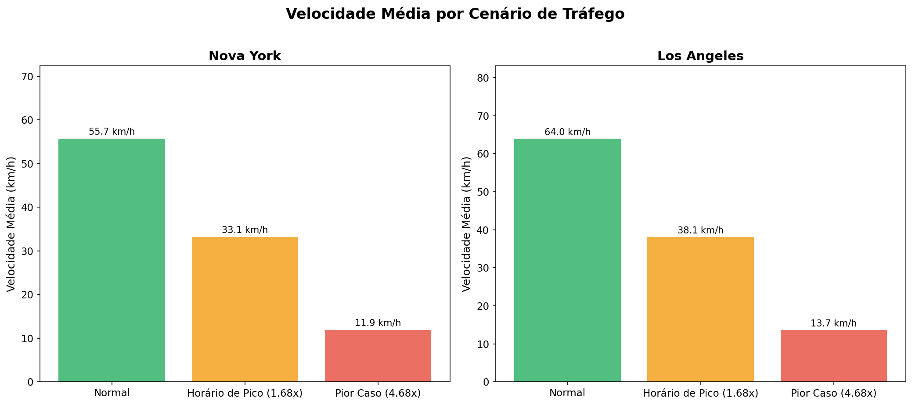
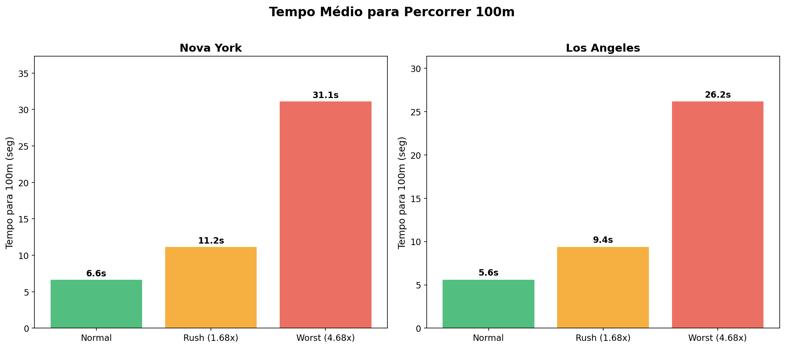
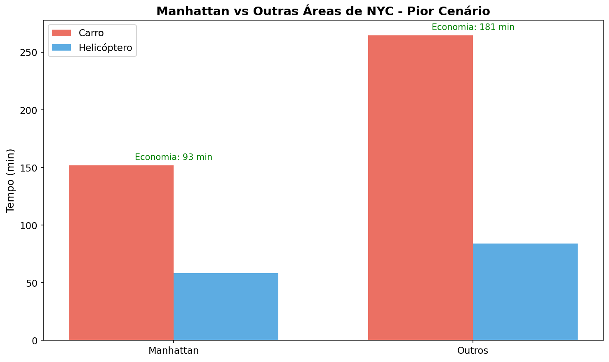
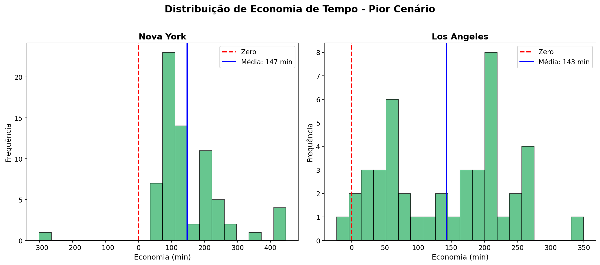

Análise de Tempo de Viagem para Aeroportos - NY & LA
⚠️ CENÁRIO PESSIMISTA (4.68x tráfego)ZIP Codes Analisados
ZIPs em Manhattan
Economia Média (NY)
Economia Média (LA)
Multiplicador Pior Caso
Velocidade Média (Worst)






| Métrica | New York | Los Angeles |
|---|---|---|
| Total ZIP Codes | 70 | 44 |
| Manhattan ZIPs | 27 | - |
| Tempo Carro (Worst) | 221 min (3h41m) | 222 min (3h42m) |
| Tempo Helicóptero (Worst) | 74 min (1h14m) | 79 min (1h19m) |
| Economia (Worst) | 147 min (2h27m) | 143 min (2h23m) |
| % com Vantagem Heli | 99% | 98% |
| Velocidade Média (Worst) | 11.9 km/h | 13.7 km/h |
| Tempo por 100m (Worst) | ~30 seg | ~26 seg |
| Multiplicador Rush Hour | 1.68x (derivado do Google Traffic) | |
| Multiplicador Pior Caso | 4.68x (derivado do Google Traffic) | |
ZIP codes de Manhattan usam EXCLUSIVAMENTE helipontos localizados na ilha:
| Código | Nome | Localização | ZIPs Atendidos |
|---|---|---|---|
| JRB | Downtown Manhattan/Wall St Heliport | Lower Manhattan | 8 |
| JRA | West 30th St Heliport | Midtown West | 9 |
| 6N5 | East 34th Street Heliport | Midtown East | 8 |
| 3NY2 | Astoria Heliport | Queens (próximo) | 2 |
Os dados do Google Maps incluem duas métricas:
Esta análise usa duration_pessimistic_min para garantir que trabalhamos com o pior cenário possível.
1.68x
Multiplicador médio durante horários de pico
4.68x
Multiplicador máximo observado (pessimista)